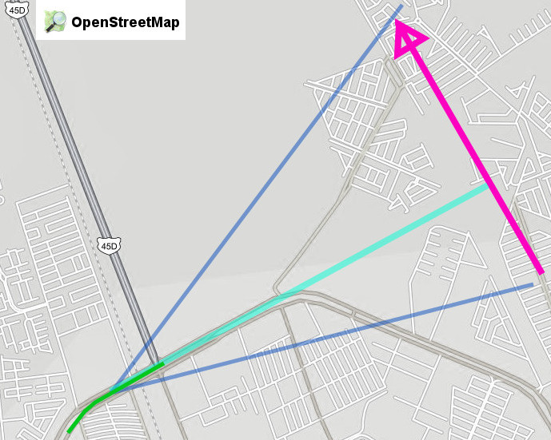

Les informo que mi esposa Rosy y su servidor veníamos conduciendo la mañana de hoy por el Periférico (en Gómez Palacio, Durango, México) y antes de subir el paso a desnivel que está frente a Soriana Hamburgo vimos un bólido surcar el cielo.
Rosy me ha dado dos notas regionales sobre el fenómeno, además de otra por parte de Sergio:
- http://conexiontotal.mx/2014/01/14/meteorito-cae-en-saltillo/
- http://www.vanguardia.com.mx/caeovniensaltilloautoridadeslobuscan-1923456.html
- http://www.elsiglodetorreon.com.mx/noticia/952770.reportan-caida-de-meteorito-en-saltillo.html
¡Fue maravilloso! ¡El más grande y fantástico que haya visto! Lástima que iba manejando y no lo esperábamos (para tratar de tomar video), como suele ocurrir.
Algunos datos que les puedo dar
- Fue cerca de las 7:10 a.m. de hoy 14 de enero de 2014.
- La trayectoria fue Sur a Norte.
- Ambos lo observamos desde que apareció hasta que terminó. Puesto que íbamos manejando, viendo al frente justo cuando ocurrió. Estimamos que haya durado 10 segundos.
- A 30 o 40° grados sobre el horizonte viendo hacia el nororiente.
- Fue muy brillante, mucho más que Venus, estimo que haya sido tan brillante como la Luna llena. Ya que en esa hora había empezado a amanecer.
- En la cabeza del bólido aprecié un halo verdoso con fragmentos que se apartaban poco, como chispas.
- Dejaba tras de sí una estela blanco-amarillenta; de un tamaño angular como el del puño a brazo extendido.
- No noté que dejara estela de humo.
- No toco el suelo; claro, el fenómeno luminoso terminó en las alturas.
Espero que estos datos sirvan para que en conjunto pueda triangularse su altitud y posible lugar de caída, si es que algo haya llegado al suelo.
Actualización
He cambiado el título de Caida de Meteorito a Avistamiento de un bólido porque no se debe llamar meteorito cuando no se tiene una muestra física que se trate de una roca que vino del espacio. Mientras tanto, por el fenómeno visual, lo correcto es llamarle bólido.